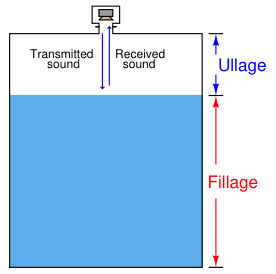
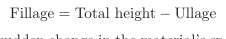
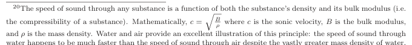
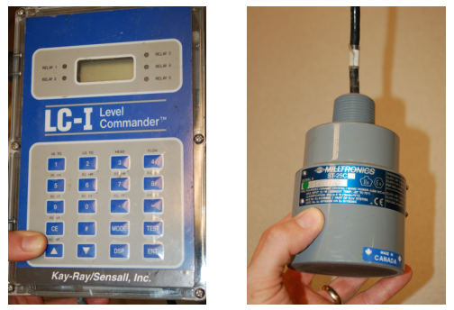
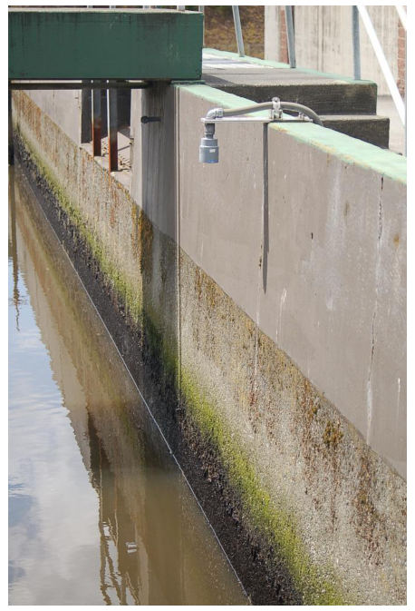
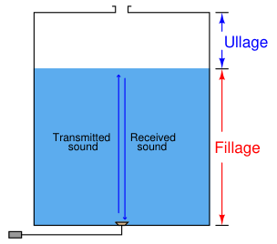
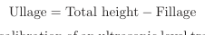
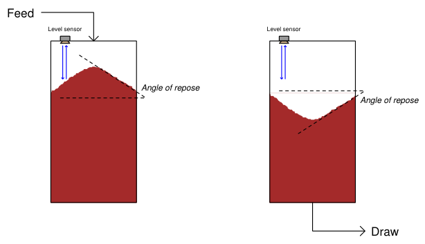

The original, as published: Tony R. Kuphaldt, Lessons In Industrial Instrumentation, Ultrasonic level measurement. CC BY 4.0, https://creativecommons.org/licenses/by/4.0/. Imported as published, from https://www.ibiblio.org/kuphaldt/socratic/sinst/book/liii.pdf https://www.ibiblio.org/kuphaldt/socratic/sinst/book/liii.pdf
Ultrasonic level instruments measure the distance from the transmitter (located at some high point) to the surface of a process material located farther below using reflected sound waves. The frequency of these waves extend beyond the range of human hearing, which is why they are called ultrasonic. The time-of-flight for a sound pulse indicates this distance, and is interpreted by the transmitter electronics as process level. These transmitters may output a signal corresponding either to the fullness of the vessel (fillage) or the amount of empty space remaining at the top of a vessel (ullage).

Ullage is the “natural” mode of measurement for this sort of level instrument, because the sound wave’s time-of-flight is a direct function of how much empty space exists between the liquid surface and the top of the vessel. Total tank height will always be the sum of fillage and ullage, though. If the ultrasonic level transmitter is programmed with the vessel’s total height, it may calculate fillage via simple subtraction:

If a sound wave encounters a sudden change in the material’s speed of sound, some of that wave’s energy will be reflected in the form of another wave in the opposite direction. In other words, the sound wave will “echo” when it encounters a material having a different sonic velocity20. This is the basis of all ultrasonic ranging devices. Thus, in order for an ultrasonic level transmitter to function reliably, the difference in sonic velocities at the interface between liquid and gas must be large. Distinct interfaces of liquid and gas almost always exhibit huge differences in their speeds of sound, and so are relatively easy to detect using ultrasonic waves. Liquids with a heavy layer of foam floating on top are more difficult, since the foam is less dense than the liquid, but considerably

and ρ is the mass density. Water and air provide an excellent illustration of this principle: the speed of sound through water happens to be much faster than the speed of sound through air despite the vastly greater mass density of water, only because of the even greater disparity in bulk modulus between water and air.
denser than the gas above. A weak echo will be generated at the interface of foam and gas, and another generated at the interface of liquid and foam, with the foam acting to scatter and dissipate much of the second echo’s energy. The instrument itself consists of an electronics module containing all the power, computation, and signal processing circuits; plus an ultrasonic transducer21 to send and receive the sound waves. This transducer is typically piezoelectric in nature, being the equivalent of a very high-frequency audio speaker. The following photographs show a typical electronics module (left) and sonic transducer (right):

The ISA-standard designations for each component would be “LT” (level transmitter) for the electronics module and “LE” (level element) for the transducer, respectively. Even though we call the device responsible for transmitting and receiving the sound waves a transducer (in the scientific sense of the word), its function as a process instrument is to be the primary sensing element for the level measurement system, and therefore it is more properly designated a “level element” (LE).
21In the industrial instrumentation world, the word “transducer” usually has a very specific meaning: a device used to process or convert standardized instrumentation signals, such as 4-20 mA converted into 3-15 PSI, etc. In the general scientific world, however, the word “transducer” describes any device converting one form of energy into another. It is this latter definition of the word that I am using when I describe an ultrasonic “transducer” – a device used to convert electrical energy into ultrasonic sound waves, and vice-versa.
This photograph shows a typical installation for an ultrasonic level-sensing element (LE), here sensing the level of wastewater in an open channel:

Electrical conduit serves to protect the signal cable from exposure to the elements as it routes back to an indoor location where the level transmitter (LT) is located.
If the ultrasonic transducer is rugged enough, and the process vessel sufficiently free of sludge and other sound-damping materials accumulating at the vessel bottom, the transducer may be mounted at the bottom of the vessel, bouncing sound waves offthe liquid surface through the liquid itself rather than through the vapor space. As stated previously, any significant difference in sonic velocity between the two materials is sufficient to reflect a sound wave. This being the case, it shouldn’t matter which material the incident sound wave propagates through first:

This arrangement makes fillage the natural measurement, and ullage a derived measurement (calculated by subtraction from total vessel height).

As mentioned previously, the calibration of an ultrasonic level transmitter depends on the speed of sound through the medium between the transducer and the interface. For top-mounted transducers, this is the speed of sound through the air (or vapor) over the liquid, since this is the medium through which the incident and reflected wave travel time is measured. For bottom-mounted transducers, this is the speed of sound through the liquid. In either case, to ensure good accuracy, one must make sure the speed of sound through the “timed” travel path remains reasonably constant (or else compensate for changes in the speed of sound through that medium by use of temperature or pressure measurements and a compensating algorithm).
Ultrasonic level instruments enjoy the advantage of being able to measure the height of solid materials such as powders and grains stored in vessels, not just liquids. Again, the fundamental criterion for detecting a level of material is that the speeds of sound through the upper and lower materials must differ (the greater the difference, the stronger the echo). A unique challenge to solids measurement is the distinct possibility of uneven material profiles. A classic problem encountered when measuring the level of a powdered or granular material in a vessel is the angle of repose formed by the material as a result of being fed into the vessel at one point:

This angled surface is difficult for an ultrasonic device to detect because it tends to scatter the sound waves laterally instead of reflecting them strongly back toward the instrument. However, even if the scattering problem is not significant, there still remains the problem of interpretation: what is the instrument actually measuring? The detected level near the vessel wall will certainly register less than at the center, but the level detected mid-way between the vessel wall and vessel center may not be an accurate average of those two heights. Moreover, this angle may decrease over time if mechanical vibrations cause the material to “flow” and tumble from center to edge. For this reason, solids storage measurement applications demanding high accuracy generally use other techniques, such as weight-based measurement (see section 20.6 for more information) or three-dimensional scanning (see section 26.3 for more information).